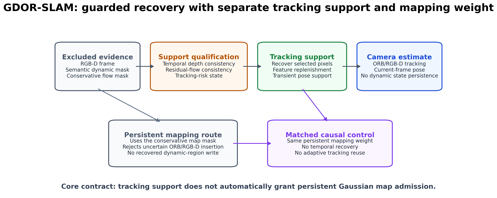
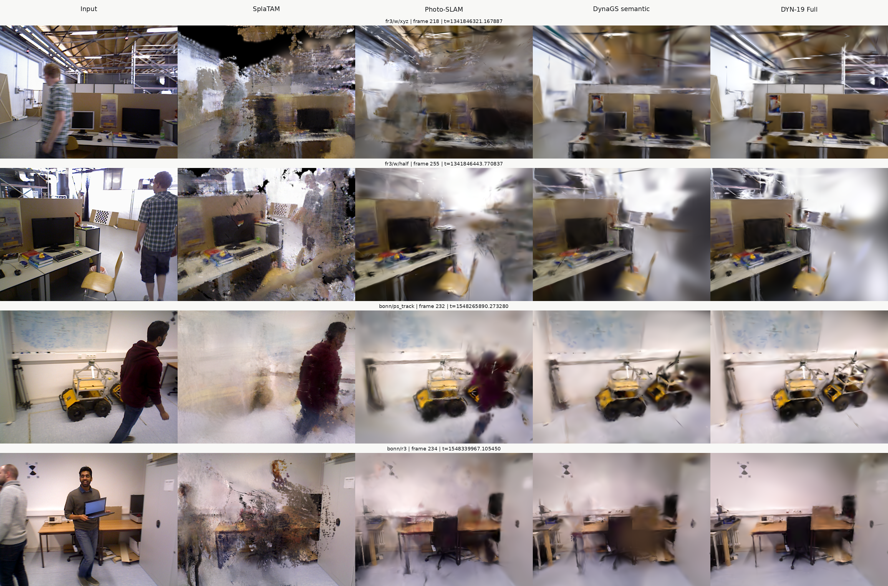

动态区域破坏静态假设
移动人物和物体会污染相机估计，并在 Gaussian 地图中留下拖影、模糊和错误结构。
Dynamic RGB-D Gaussian SLAM · Project Briefing
在动态场景中恢复对相机定位有用的观测，同时保持持久 Gaussian 地图的静态写入边界。
GDOR guarded-recovery mechanism · DYN-19 Full current configuration · DYN-21 Protocol-300 verification
01 · Problem
硬动态 mask 能保护静态地图，但也会误删背景、边界和相机一致的观测，使位姿估计在高遮挡区间失去约束。
移动人物和物体会污染相机估计，并在 Gaussian 地图中留下拖影、模糊和错误结构。
语义 mask 会覆盖动态物体后的可见背景、暂时静止表面和由相机运动主导的像素。
观测可以对当前帧 tracking 有用，但仍不应获得 ORB MapPoint 或 Gaussian 的持久写入权。
02 · Method
项目中的 GDOR 机制把 tracking support 与 mapping weight 分离。失败闭合：任何必要信号无效时，退回保守排除。

03 · Contributions
这里展示的是项目工作本身；DYN-19 和 DYN-21 是实验配置与验证批次，而不是项目名称。
Tracking utility 不自动授予 persistent Gaussian map authority，显式区分瞬态使用与长期写入。
融合时间深度、残差光流与 tracking risk，在动态排除区内恢复一小部分可信支持。
MapPoint rejection、RGB-D densification rejection 和 recovered-support overlap 均有运行时计数。
Tracking、mapping、runtime、真实渲染和 590 个文件均能回溯到冻结源码、计划和 SHA-256 清单。
04 · Protocol
该 release 是当前方法的可复查验证包。每个序列固定 seed 0、300 帧、unique association ≤ 0.02 s、fixed-scale SE(3)。
05 · Tracking
ATE RMSE，单位 cm，越低越好。当前 Full 相比 DynaGS semantic 在四个序列上均改善。
06 · Positioning
外部论文数值与本地三 seed DYN-19 行保留来源边界；不声明跨协议 best/second-best。
| Method | w/xyz | w/half | w/static | s/half | Avg. |
|---|---|---|---|---|---|
| Dyna-SLAM [ext] | 1.7 | 2.6 | 0.7 | 2.8 | 2.0 |
| RoDyn-SLAM [ext] | 8.3 | 5.6 | 1.7 | 4.4 | 4.1 |
| GassiDy [ext] | 3.5 | 3.7 | 0.6 | 2.4 | 2.6 |
| DGS-SLAM [ext] | 4.1 | 5.5 | 0.6 | 4.1 | 3.0 |
| DyPho-SLAM [ext] | 1.6 | 2.6 | 0.6 | 1.6 | 1.6 |
| DYN-19 Semantic [local] | 2.341 | 3.379 | 0.737 | 24.175 | 7.658 |
| DYN-19 MapMatched [local] | 2.103 | 3.423 | 0.790 | 36.775 | 10.773 |
| DynaGS-SLAM Full [local] | 2.148 | 3.609 | 0.730 | 4.864 | 2.838 |
07 · Mapping + Runtime
Mapping 保留动态前景，因此 PSNR/SSIM 仅作为 full-frame diagnostic。Runtime 为 end-to-end wall time。
PSNR dB / SSIM。Full 的平均 SSIM 最高，但平均 PSNR 低于 Photo-SLAM 与 semantic，因此不作无条件 mapping superiority claim。
Full 的 guarded recovery 增加计算开销；当前只报告 end-to-end，不构造缺乏统一计时接口的 tracking/mapping 分项排名。
08 · Qualitative Evidence
所有面板来自真实输入、历史只读 baseline 或当前 Gaussian map 渲染，无生成式补图。

09 · Traceability
`gdor-slam` 是当前 runner 与完整实验制品的托管仓库；DynaGS-SLAM 是项目与研究工作的名称。
f1c00ec69c8…当前 Protocol-300 runner 与配置。
frozen_plan.yaml序列、seed、帧范围和输出根目录。
dyn21_…_run01轨迹、日志、metrics、Gaussian maps。
fd42a51626e…Tracking、mapping、runtime 与 builder。
895a08f12fd…分支、tag、HTML 与 SHA-256 登记。
kenchikuliu/gdor-slam；相关 mapping 源码另发布于 kenchikuliu/DynaGS-SLAM 的固定分支与 commit。10 · Conclusion